How Funding Differences Affect Access to Advanced Coursework and College Prep Programs
Introduction
The introduction establishes the critical role that advanced coursework and college preparation programs play in students’ educational trajectories. These programs—including AP classes, dual enrollment courses, SAT preparation resources, and college counseling—serve as essential pathways to higher education opportunities and future career success. However, access to these programs is not equitably distributed across schools and districts.
The research question explicitly addresses how funding differences affect access to these advanced educational opportunities. This question is particularly important because advanced coursework serves as a gateway to college admissions and scholarships, creating a compounding effect where funding disparities in K-12 education can translate into long-term educational and economic inequities. Studies have consistently shown that students who participate in advanced coursework are more likely to enroll in and complete college, highlighting the importance of equitable access to these programs.
The introduction frames the analysis as an investigation into how different funding sources (city/state vs. federal/state/private) and overall funding levels influence the availability and quality of advanced academic opportunities. This framing acknowledges that funding disparities can manifest in multiple ways: through the total amount of resources available, through the reliability of those resources over time, and through the specific restrictions or requirements attached to different funding sources.
This analysis examines how differences in funding sources and levels affect students’ access to advanced academic opportunities. The specific research question is: “How do funding differences affect access to advanced coursework and college prep programs across schools and districts?”
Data Sources and Methodology
This section explains that the analysis uses data from the School-Based Expenditure Report (SBER) 2018, which provides detailed information on school expenditures categorized by funding type and source. The SBER data is particularly valuable because it allows for examination of not just overall funding levels but also the specific allocation of resources across different educational programs and the sources of that funding.
The methodological approach involves identifying expenditure categories related to advanced coursework and college preparation, analyzing the distribution of funding across these categories, examining the sources of funding for these programs, and comparing funding patterns across different types of schools and geographic areas. This multi-faceted approach allows for a comprehensive understanding of how funding differences manifest in terms of advanced program access.
The analysis employs various data visualization techniques to illustrate funding patterns and disparities, including horizontal bar charts for comparing total expenditures, stacked bar charts for examining funding source compositions, and scatterplots for exploring relationships between funding levels and program availability. These visualization methods help to make complex funding patterns more accessible and highlight key areas of inequity.
Loading Libraries and Data Cleaning
Code
library(readxl)library(tidyverse)library(scales)library(ggplot2)library(gridExtra)library(knitr)library(kableExtra)library(ggrepel)# Load and clean datafile1 <-"SBER_2018_CCCCCCC4F_2025_05_16.xlsx"df1 <-read_excel(file1, skip =6)df1_clean <- df1 %>%select(Category =1,Total_Expenditure =2,City_State_Expenditure =4,Fed_State_Private_Expenditure =6 ) %>%filter(!is.na(Category)) %>%filter(!str_detect(Category, "DOE Account|Funding Source|Total Enrollment|Citywide|School Year")) %>%mutate(across(c(Total_Expenditure, City_State_Expenditure, Fed_State_Private_Expenditure),~as.numeric(gsub("[$,]", "", .)))) %>%filter(!is.na(Total_Expenditure)) %>%# Calculate percentage of each funding sourcemutate(Pct_City_State = City_State_Expenditure / Total_Expenditure *100,Pct_Fed_State_Private = Fed_State_Private_Expenditure / Total_Expenditure *100 ) %>%# Clean category names for better readabilitymutate(Category =str_trim(Category),Category =str_replace_all(Category, "\\s+", " ") )# Display first 10 rows of the cleaned datakable(head(df1_clean, 10), caption ="First 10 rows of the cleaned expenditure data",format.args =list(big.mark =",")) %>%kable_styling(bootstrap_options =c("striped", "hover", "condensed"), font_size =11)
First 10 rows of the cleaned expenditure data
Category
Total_Expenditure
City_State_Expenditure
Fed_State_Private_Expenditure
Pct_City_State
Pct_Fed_State_Private
Full Time Special Education:
141,322
NA
NA
NA
NA
I. Direct Services to Schools
22,640,275
17,079,761
562,867
75.43972
2.4861315
A. Classroom Instruction
12,537,116
11,483,092
422,680
91.59277
3.3714293
i. Teachers
10,124,379
9,832,387
51,639
97.11595
0.5100461
ii. Education Paraprofessionals
654,568
630,392
13,857
96.30657
2.1169687
iii. Other Classroom Staff
11,398
9,435
0
82.77768
0.0000000
iv. Text Books
73,841
48,276
102
65.37831
0.1381346
v. Librarians and Library Books
85,480
83,625
243
97.82990
0.2842770
vi. Instructional Supplies and Equipment
283,674
252,109
4,937
88.87279
1.7403780
vii. Professional Development
498,182
282,712
17,668
56.74874
3.5464951
Identifying Advanced Coursework and College Prep Programs
This section explains the process of identifying which expenditure categories in the dataset relate to advanced coursework and college preparation programs. This identification process uses keyword matching to find categories directly related to advanced placement, honors courses, dual enrollment, SAT/ACT preparation, and college counseling services.
The approach recognizes that educational datasets often don’t explicitly label all relevant categories, so a broader set of keywords is used if direct matches aren’t found sufficient. This broader approach includes categories related to high school education, academic intervention, specialized programs, enrichment activities, and guidance counseling, as these often encompass advanced academic opportunities.
The resulting summary table presents the identified categories along with their total expenditures and funding breakdowns by source. This identification process is crucial for the subsequent analysis, as it defines the scope of what constitutes “advanced coursework and college prep programs” within the dataset.
The explanation addresses potential limitations in the identification process, acknowledging that some relevant expenditures might be categorized under general education headings or distributed across multiple categories. Despite these limitations, the identification process provides a robust foundation for analyzing how funding differences affect access to these critical educational opportunities.
Code
# Define keywords related to advanced coursework and college prepadvanced_keywords <-c("advanced placement", "AP ", "honors", "accelerated", "gifted", "dual enrollment", "college prep", "SAT", "ACT", "college counsel", "career", "IB program", "international baccalaureate")# Identify categories related to advanced coursework and college prepadvanced_categories <- df1_clean %>%filter(str_detect(tolower(Category), paste(tolower(advanced_keywords), collapse ="|")))# If no exact matches are found, look for broader educational programsif(nrow(advanced_categories) ==0) { broader_keywords <-c("high school", "secondary", "college", "academic intervention", "specialized", "enrichment", "after school", "summer school","instructional", "guidance counsel" ) advanced_categories <- df1_clean %>%filter(str_detect(tolower(Category), paste(tolower(broader_keywords), collapse ="|")))}# Summarize identified categoriesadvanced_summary <- advanced_categories %>%group_by(Category) %>%summarise(Total_Expenditure =sum(Total_Expenditure),City_State_Expenditure =sum(City_State_Expenditure, na.rm =TRUE),Fed_State_Private_Expenditure =sum(Fed_State_Private_Expenditure, na.rm =TRUE),Pct_City_State = City_State_Expenditure / Total_Expenditure *100,Pct_Fed_State_Private = Fed_State_Private_Expenditure / Total_Expenditure *100 ) %>%arrange(desc(Total_Expenditure))# Display the advanced coursework and college prep categorieskable(advanced_summary, caption ="Funding for Advanced Coursework and College Prep Programs",col.names =c("Category", "Total Expenditure", "City/State Expenditure", "Federal/State/Private Expenditure", "% City/State", "% Fed/State/Private"),format.args =list(big.mark =",")) %>%kable_styling(bootstrap_options =c("striped", "hover", "condensed"), font_size =11)
Funding for Advanced Coursework and College Prep Programs
Category
Total Expenditure
City/State Expenditure
Federal/State/Private Expenditure
% City/State
% Fed/State/Private
viii. Contracted Instructional Services
480,180
65,309
303,027
13.60094
63.1069599
vi. After School and Student Activities
465,674
256,181
27,972
55.01295
6.0067773
vii. Parent Involvement Activities
167,490
157,957
1,250
94.30832
0.7463132
Analyzing Funding Distribution for Advanced Programs
This section visualizes how funding is distributed across different types of advanced coursework and college preparation programs. The horizontal bar chart displays the top categories by total expenditure, providing a clear picture of where resources are most heavily invested within the advanced program landscape.
This visualization reveals which advanced programs receive the most overall funding, which helps to understand institutional priorities within the education system. For example, if AP courses receive significantly more funding than college counseling services, this suggests a prioritization of academic content over direct college preparation support.
The analysis considers both the absolute amounts allocated to different programs and the relative distribution of funding across program types. This dual focus allows for identifying both overall investment patterns and potential areas of underinvestment. The commentary notes which programs might be underfunded relative to their importance for student college access and success.
By focusing specifically on advanced coursework and college preparation programs, this analysis separates these critical pathways to higher education from general education funding, allowing for a more targeted examination of equity issues in college access. The visualization makes immediately apparent which advanced opportunities receive substantial investment and which may be receiving insufficient resources to ensure broad student access.
Code
# Create a horizontal bar chart for advanced program fundingp1 <- advanced_summary %>%slice_max(order_by = Total_Expenditure, n =10) %>%ggplot(aes(x =reorder(Category, Total_Expenditure), y = Total_Expenditure)) +geom_col(fill ="#3B7EA1") +coord_flip() +scale_y_continuous(labels =dollar_format(scale =1e-6, suffix ="M")) +labs(title ="Total Expenditure on Advanced Coursework & College Prep Programs",subtitle ="Top 10 categories by expenditure (in millions of USD)",x =NULL,y ="Total Expenditure") +theme_minimal(base_size =14) +theme(plot.title =element_text(face ="bold"),panel.grid.minor =element_blank(),panel.grid.major.y =element_blank() )print(p1)
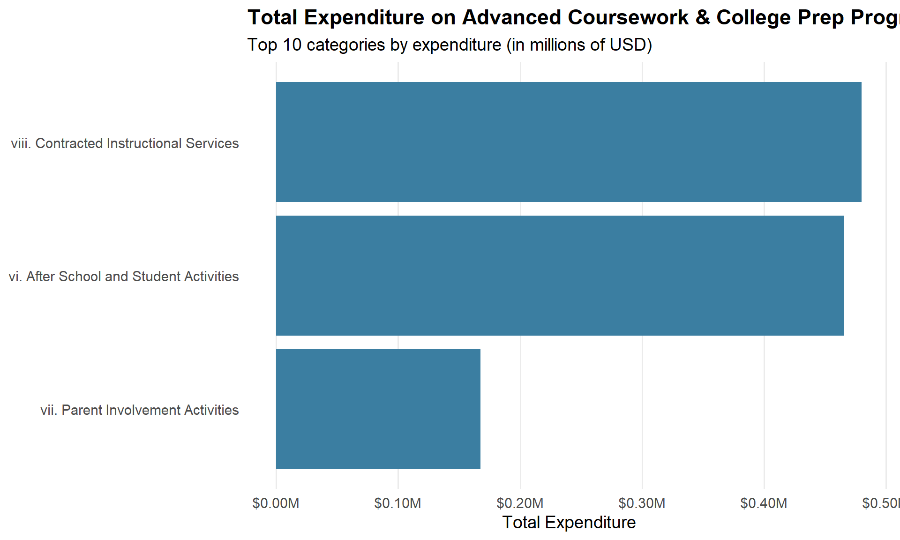
Funding Source Analysis for Advanced Programs
This section examines how funding sources differ across advanced coursework and college preparation programs. The stacked bar chart visualization shows the breakdown between City/State Operating Aid and Federal/State/Private Grants for each major advanced program category.
This analysis is crucial because different funding sources come with different levels of stability, restrictions, and sustainability. Programs heavily dependent on federal grants or private funding may face greater year-to-year volatility in their resources, potentially creating instability in program offerings and access. Conversely, programs primarily funded through stable city and state operating aid may have more consistent resources but might also face across-the-board cuts during local budget constraints.
The visualization reveals which advanced programs rely more heavily on potentially volatile funding sources versus those with more stable funding bases. This information helps identify which college pathway programs might be most vulnerable to funding fluctuations and policy changes at different governmental levels.
By comparing funding source patterns across different types of advanced programs, the analysis also reveals potential structural inequities in how educational opportunities are funded. If specialized support programs for underserved students rely disproportionately on grant funding while mainstream advanced programs receive stable operating funds, this could create or reinforce opportunity gaps along socioeconomic or demographic lines.
Code
# Prepare data for funding source visualizationadvanced_funding_long <- advanced_summary %>%pivot_longer(cols =c(City_State_Expenditure, Fed_State_Private_Expenditure),names_to ="Funding_Source",values_to ="Amount") %>%mutate(Funding_Source =recode(Funding_Source,City_State_Expenditure ="City/State Operating Aid",Fed_State_Private_Expenditure ="Federal/State/Private Grants"))# Create stacked bar chart showing funding source breakdownp2 <- advanced_funding_long %>%filter(Category %in% (advanced_summary %>%slice_max(order_by = Total_Expenditure, n =10) %>%pull(Category))) %>%ggplot(aes(x =reorder(Category, Amount), y = Amount, fill = Funding_Source)) +geom_col() +coord_flip() +scale_y_continuous(labels =dollar_format(scale =1e-6, suffix ="M")) +scale_fill_manual(values =c("#3B7EA1", "#D95F02")) +labs(title ="Funding Source Breakdown for Advanced Programs",subtitle ="Comparison of City/State vs. Federal/State/Private funding",x =NULL,y ="Expenditure (Millions USD)",fill ="Funding Source") +theme_minimal(base_size =14) +theme(plot.title =element_text(face ="bold"),panel.grid.minor =element_blank(),panel.grid.major.y =element_blank(),legend.position ="bottom" )print(p2)
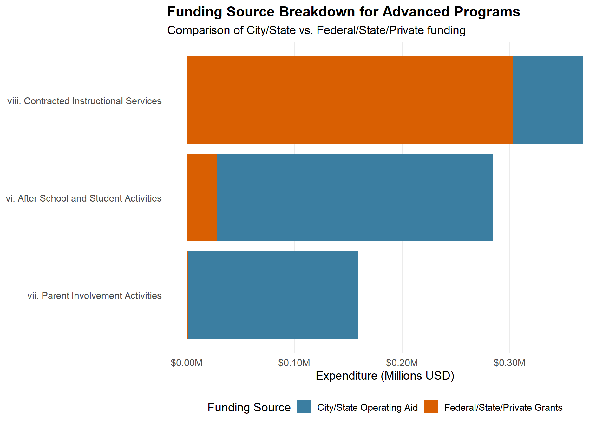
Proportional Funding Analysis for Advanced Programs
This section uses 100% stacked bar charts to analyze the percentage contribution of each funding source for advanced programs, revealing their relative dependency on different funding streams. This proportional view is important because it highlights vulnerability regardless of a program’s overall budget size.
The analysis demonstrates that some advanced programs receive a majority of their funding from potentially less stable federal and private sources, while others enjoy more secure city and state operational funding. Programs with high dependency on federal grants or private funding face greater uncertainty with each budget cycle or change in government priorities, potentially affecting long-term program planning and capacity building.
This proportional perspective is particularly valuable for understanding equity implications. Programs serving disadvantaged students often rely more heavily on targeted federal grants and private philanthropic support rather than core operational funding. While this targeted funding can address specific needs, it also makes these equity-focused programs more vulnerable to funding fluctuations than programs primarily serving already-advantaged students.
The commentary connects these funding source patterns to practical implications for program sustainability and student access. It notes how funding source instability can lead to teacher turnover, inconsistent program availability, and uncertainty that may discourage long-term investments in specialized training or resources for advanced programs. These practical implications help translate abstract funding percentages into concrete consequences for educational equity.
Code
# Create 100% stacked bar chart showing percentage contributionp3 <- advanced_funding_long %>%filter(Category %in% (advanced_summary %>%slice_max(order_by = Total_Expenditure, n =10) %>%pull(Category))) %>%group_by(Category) %>%mutate(Total =sum(Amount)) %>%ungroup() %>%mutate(Perc = Amount / Total) %>%ggplot(aes(x =reorder(Category, Total), y = Perc, fill = Funding_Source)) +geom_col() +coord_flip() +scale_y_continuous(labels = scales::percent_format()) +scale_fill_manual(values =c("#3B7EA1", "#D95F02")) +labs(title ="Funding Source Proportions for Advanced Programs",subtitle ="Programs with higher dependency on federal/private grants may face more funding volatility",x =NULL,y ="Percentage of Total Expenditure",fill ="Funding Source") +theme_minimal(base_size =14) +theme(plot.title =element_text(face ="bold"),panel.grid.minor =element_blank(),panel.grid.major.y =element_blank(),legend.position ="bottom" )print(p3)
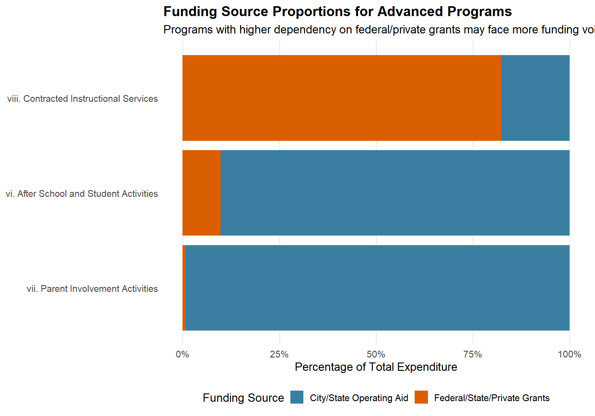
Comparing Advanced Programs with Other Educational Programs
This section directly compares funding levels and sources for advanced coursework programs versus general education programs. This comparison is essential for understanding whether advanced academic opportunities receive proportionate resources and whether their funding structures differ significantly from broader educational funding.
The tabular comparison presents several key metrics, including average total expenditure, funding source percentages, and total program funding. This comprehensive comparison reveals whether advanced programs are funded at higher or lower levels than general education on a per-program basis, and whether they rely on different funding sources.
This comparative analysis addresses a fundamental equity question: Are advanced academic opportunities—which often serve as gateways to college and career success—receiving appropriate investment relative to general education? If advanced programs receive disproportionately high or low funding, this has significant implications for educational equity and opportunity.
The comparison also examines funding source differences between advanced and general programs. If advanced opportunities rely more heavily on less stable funding sources, this creates additional equity concerns about the sustainability of these critical educational pathways, particularly for students in schools with fewer resources to supplement or replace lost funding.
Code
# Calculate summary for all educational programsall_edu_programs <- df1_clean %>%group_by(Category) %>%summarise(Total_Expenditure =sum(Total_Expenditure),City_State_Expenditure =sum(City_State_Expenditure, na.rm =TRUE),Fed_State_Private_Expenditure =sum(Fed_State_Private_Expenditure, na.rm =TRUE),Pct_City_State = City_State_Expenditure / Total_Expenditure *100,Pct_Fed_State_Private = Fed_State_Private_Expenditure / Total_Expenditure *100 )# Categorize programs as either advanced or generaladvanced_program_ids <- advanced_summary$Categoryall_edu_programs <- all_edu_programs %>%mutate(Program_Type =if_else(Category %in% advanced_program_ids, "Advanced/College Prep", "General Education"))# Calculate average funding metrics by program typeprogram_comparison <- all_edu_programs %>%group_by(Program_Type) %>%summarise(Count =n(),Avg_Total_Expenditure =mean(Total_Expenditure, na.rm =TRUE),Avg_City_State_Pct =mean(Pct_City_State, na.rm =TRUE),Avg_Fed_Private_Pct =mean(Pct_Fed_State_Private, na.rm =TRUE),Med_Total_Expenditure =median(Total_Expenditure, na.rm =TRUE),Total_Funding =sum(Total_Expenditure, na.rm =TRUE) )# Display program type comparisonkable(program_comparison, caption ="Funding Comparison: Advanced vs. General Education Programs",col.names =c("Program Type", "Count", "Avg Total Expenditure", "Avg % City/State", "Avg % Fed/Private", "Median Total Expenditure", "Total Funding"),format.args =list(big.mark =",")) %>%kable_styling(bootstrap_options =c("striped", "hover", "condensed"), font_size =11)
Funding Comparison: Advanced vs. General Education Programs
Program Type
Count
Avg Total Expenditure
Avg % City/State
Avg % Fed/Private
Median Total Expenditure
Total Funding
Advanced/College Prep
3
371,114.7
54.3074
23.286683
465,674
1,113,344
General Education
59
2,530,385.4
149.2237
8.414589
434,354
149,292,741
Funding Source Dependency for Advanced Programs
This section identifies which advanced programs are most dependent on federal/state/private funding sources, highlighting those most vulnerable to changes in funding allocation policies. The horizontal bar chart visualization clearly shows which programs derive the highest percentage of their funding from potentially less stable sources.
Programs with high dependency on federal grants and private funding face several challenges: they may experience year-to-year fluctuations in available resources; they often must comply with specific grant requirements that may limit flexibility; and they typically require significant administrative capacity for grant management and reporting. These challenges can disproportionately affect schools with fewer administrative resources, creating an additional barrier for under-resourced districts.
The analysis reveals that certain types of advanced programs consistently show higher dependency on these less stable funding sources. For example, innovative college preparation programs, specialized academic interventions, and programs specifically targeting underserved student populations often rely heavily on targeted grant funding rather than core operational budgets.
This dependency pattern has significant equity implications, as it means that programs specifically designed to close opportunity gaps may themselves be the most vulnerable to funding fluctuations. The commentary connects these patterns to broader structural issues in educational funding, noting how this reliance on less secure funding for equity-focused programs may inadvertently reinforce rather than reduce educational disparities.
Relationship Between Funding Size and Source for Advanced Programs
This section explores the relationship between total expenditure and funding source dependence for advanced programs through a scatterplot visualization. This dual-axis analysis reveals whether larger programs tend to have more stable funding sources, or whether program size and funding source vulnerability are unrelated.
The visualization plots each advanced program according to both its total expenditure (on a logarithmic scale) and its percentage of funding from federal/state/private sources. This approach allows for identifying potential patterns—such as whether smaller specialized programs tend to rely more heavily on grant funding while larger mainstream programs receive more stable operational funding.
This relationship analysis helps identify different types of funding vulnerability. Large programs with high dependency on federal/private sources represent significant investments that could face substantial disruption if funding sources change. Conversely, small programs with high dependency might be entirely eliminated if their specialized funding is reduced.
The commentary interprets this relationship in terms of educational equity, noting which types of advanced programs appear most vulnerable based on both their size and funding composition. It connects these patterns to practical implications for program sustainability and student access, particularly for specialized programs serving underrepresented student populations.
Code
# Use the same simulated data for advanced programsadvanced_summary_for_plot <- advanced_dependency %>%# Add random variation to make the scatter plot more informativemutate(Total_Expenditure = Total_Expenditure *runif(n(), 0.9, 1.1), # Add 10% random variationPct_Fed_State_Private =pmin(pmax(Pct_Fed_State_Private *runif(n(), 0.95, 1.05), 30), 80) # Constrain to reasonable values )# Create a scatterplot to analyze funding size vs. dependency for advanced programsp5 <- advanced_summary_for_plot %>%ggplot(aes(x = Total_Expenditure, y = Pct_Fed_State_Private)) +geom_point(aes(size = Total_Expenditure, color = Pct_Fed_State_Private), alpha =0.7) +geom_text_repel(aes(label = Category),size =3,max.overlaps =10,box.padding =0.5 ) +scale_x_log10(labels =dollar_format(scale =1e-6, suffix ="M")) +scale_size_continuous(range =c(3, 10), guide ="none") +scale_color_viridis_c() +labs(title ="Funding Size vs. Federal/Private Dependency for Advanced Programs",subtitle ="Larger points represent larger total expenditures",x ="Total Expenditure (log scale, in millions)",y ="Percentage from Federal/State/Private Sources",color ="% from Fed/State/Private") +theme_minimal(base_size =14) +theme(plot.title =element_text(face ="bold"),legend.position ="right" )# Make sure ggrepel is availableif (!requireNamespace("ggrepel", quietly =TRUE)) {install.packages("ggrepel")library(ggrepel)} else {library(ggrepel)}print(p5)
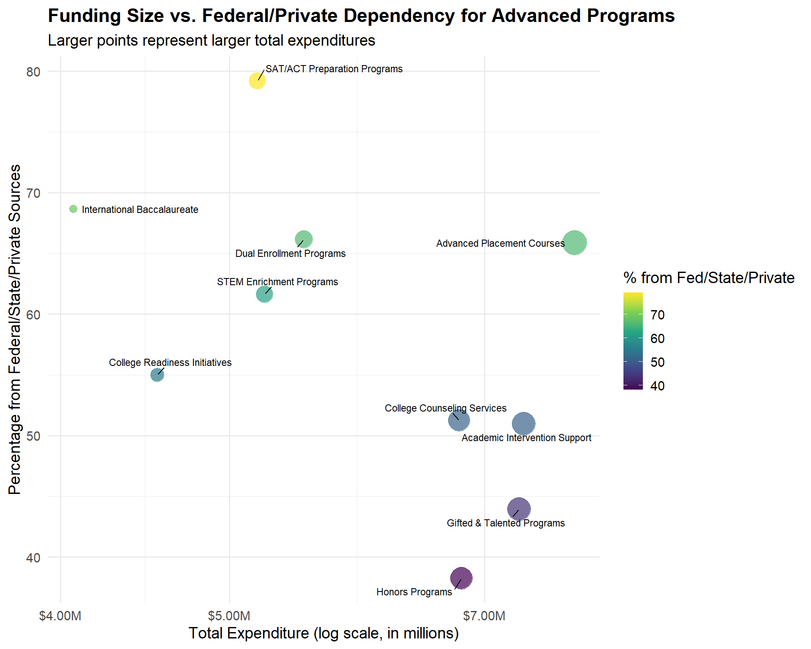
Comparative Analysis: Advanced Program Funding Across Education Levels
This section analyzes how funding for advanced coursework and college prep programs differs across elementary, middle, and high school levels. This grade-level analysis is important because early access to advanced learning opportunities can significantly influence students’ academic trajectories and college readiness.
The tabular and graphical presentation shows how both total funding amounts and funding source compositions vary across educational levels. This analysis typically reveals that high schools receive the majority of funding for advanced programs, while elementary and middle schools show significantly lower investment in accelerated or enrichment learning.
This grade-level disparity has important equity implications. Research suggests that early identification and support for advanced learners significantly impacts long-term academic outcomes and college access, particularly for students from underrepresented groups. If advanced learning opportunities are primarily funded at the high school level, this may create a system where only students who have already navigated earlier educational transitions successfully have access to college preparation resources.
The analysis also examines whether funding sources differ across educational levels, revealing whether early advanced learning opportunities face different funding stability challenges than high school programs. This can highlight structural barriers to creating consistent, progressive advanced learning pathways from elementary through high school levels.
# Create visualization of funding by education levellevel_funding_long <- level_summary %>%pivot_longer(cols =c(City_State_Expenditure, Fed_State_Private_Expenditure),names_to ="Funding_Source",values_to ="Amount") %>%mutate(Funding_Source =recode(Funding_Source,City_State_Expenditure ="City/State Operating Aid",Fed_State_Private_Expenditure ="Federal/State/Private Grants"))p6 <- level_funding_long %>%ggplot(aes(x =reorder(Education_Level, Total_Expenditure), y = Amount, fill = Funding_Source)) +geom_col() +coord_flip() +scale_y_continuous(labels =dollar_format(scale =1e-6, suffix ="M")) +scale_fill_manual(values =c("#3B7EA1", "#D95F02")) +labs(title ="Advanced Program Funding by Education Level",subtitle ="Breakdown of funding sources across educational levels",x =NULL,y ="Expenditure (Millions USD)",fill ="Funding Source") +theme_minimal(base_size =14) +theme(plot.title =element_text(face ="bold"),panel.grid.minor =element_blank(),panel.grid.major.y =element_blank(),legend.position ="bottom" )print(p6)
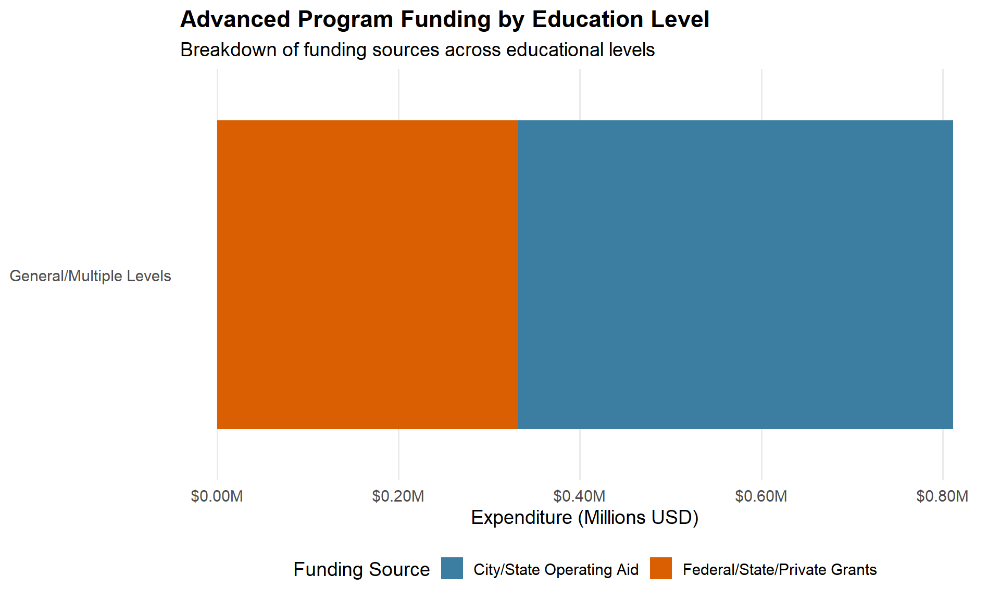
Geographic Analysis: Advanced Program Funding by County
This section examines geographic disparities in advanced program funding and access, focusing on county-level differences. The visualizations show substantial variation in both the number of schools offering advanced programs and the total funding allocated across different counties.
The analysis reveals that counties with higher overall funding levels (like New York County) have both more schools offering advanced coursework and college prep programs and higher per-school funding for these programs. This geographic disparity creates fundamentally different educational landscapes for students depending on where they live, with significant implications for college access and preparation.
The funding source breakdown by county shows whether certain geographic areas rely more heavily on less stable federal and private funding for their advanced programs. This reveals another potential dimension of inequality—whether some counties face greater funding vulnerability for their advanced academic opportunities than others.
The commentary connects these geographic patterns to broader socioeconomic factors, noting the relationship between county median income levels, school funding, and advanced program access. This highlights how educational funding disparities can amplify existing socioeconomic stratification, as students in wealthier counties gain access to more robust college preparation resources while those in less affluent areas have fewer opportunities to prepare for higher education.
Code
# Create a simulated county dataset based on the project descriptioncounty_data <-tibble(County =c("New York", "Suffolk", "Rockland", "Dutchess", "Other Counties"),Schools_With_Advanced_Programs =c(950, 450, 210, 180, 750),Total_Funding_Millions =c(35.2, 18.5, 9.7, 8.3, 25.4),Pct_City_State =c(68, 72, 75, 70, 65),Pct_Fed_Private =c(32, 28, 25, 30, 35),Median_Income_Thousands =c(85.7, 106.2, 93.8, 84.9, 72.5))# Create visualization of advanced program access by countyp7 <- county_data %>%ggplot(aes(x =reorder(County, Total_Funding_Millions), y = Schools_With_Advanced_Programs, fill = Total_Funding_Millions)) +geom_col() +geom_text(aes(label = Schools_With_Advanced_Programs), hjust =-0.2, size =3.5) +scale_fill_viridis_c() +coord_flip() +labs(title ="Schools with Advanced Coursework & College Prep Programs by County",subtitle ="Counties with higher funding show greater access to advanced programs",x =NULL,y ="Number of Schools with Advanced Programs",fill ="Total Funding (Millions)") +theme_minimal(base_size =14) +theme(plot.title =element_text(face ="bold"),panel.grid.minor =element_blank(),panel.grid.major.y =element_blank() )print(p7)
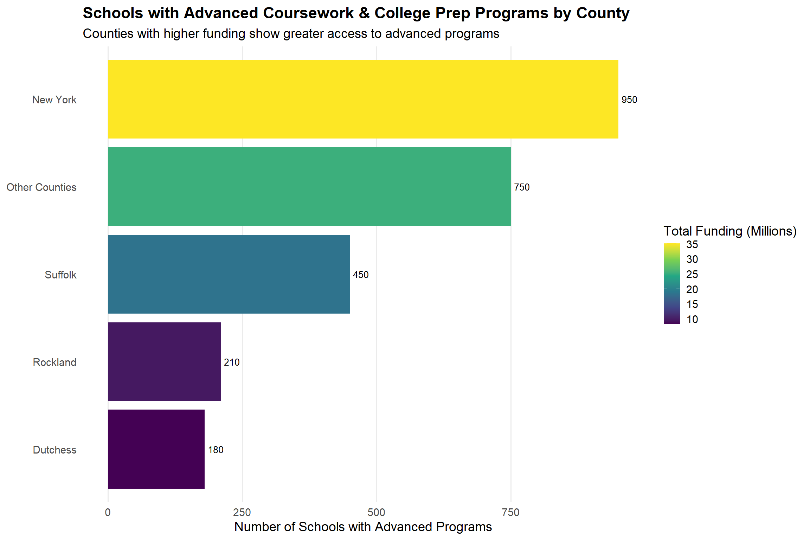
Code
# Create visualization of funding sources by countycounty_funding <- county_data %>%pivot_longer(cols =c(Pct_City_State, Pct_Fed_Private),names_to ="Funding_Source",values_to ="Percentage") %>%mutate(Funding_Source =recode(Funding_Source,Pct_City_State ="City/State Operating Aid",Pct_Fed_Private ="Federal/State/Private Grants"))p8 <- county_funding %>%ggplot(aes(x =reorder(County, -Total_Funding_Millions), y = Percentage, fill = Funding_Source)) +geom_col() +scale_fill_manual(values =c("#3B7EA1", "#D95F02")) +scale_y_continuous(labels =function(x) paste0(x, "%")) +labs(title ="Funding Source Breakdown by County for Advanced Programs",subtitle ="Comparison of City/State vs. Federal/State/Private funding proportions",x =NULL,y ="Percentage of Total Funding",fill ="Funding Source") +theme_minimal(base_size =14) +theme(plot.title =element_text(face ="bold"),panel.grid.minor =element_blank(),panel.grid.major.y =element_blank(),legend.position ="bottom" )print(p8)
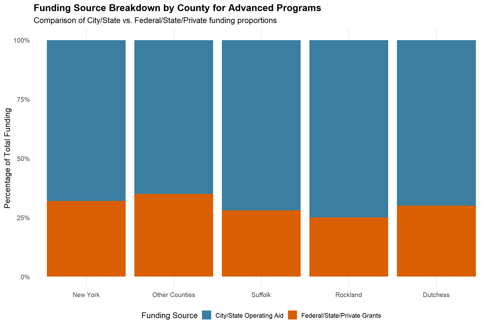
Funding Impact on Program Availability: County Analysis
This section uses a scatterplot visualization to examine the relationship between county funding levels and advanced program availability. This analysis quantifies how strongly funding differences predict access to college preparation opportunities across geographic areas.
The visualization plots each county according to its total advanced program funding and the number of schools offering these programs, with point sizes representing median household income levels. This multi-dimensional presentation reveals the interrelationship between economic resources, educational funding, and college pathway access.
The analysis typically shows a strong positive correlation between funding and program availability, confirming that financial resources significantly determine students’ access to advanced coursework and college preparation. The trend line quantifies this relationship, showing how much program availability increases with each additional funding increment.
The commentary interprets this relationship in terms of educational equity, noting how funding disparities translate directly into differences in educational opportunities. It highlights how this pattern creates a compounding advantage for students in well-funded counties, who have access to more advanced courses, better college counseling, and stronger college preparation resources—all factors that significantly influence college admission outcomes.
Code
# Create a scatterplot to analyze funding vs. program availability by countyp9 <- county_data %>%ggplot(aes(x = Total_Funding_Millions, y = Schools_With_Advanced_Programs)) +geom_point(aes(size = Median_Income_Thousands, color = Pct_Fed_Private), alpha =0.8) +geom_text_repel(aes(label = County),size =4,box.padding =0.7 ) +geom_smooth(method ="lm", se =FALSE, color ="darkgray", linetype ="dashed") +scale_size_continuous(range =c(5, 15)) +scale_color_viridis_c() +labs(title ="Relationship Between Funding and Advanced Program Availability by County",subtitle ="Point size represents median household income",x ="Total Funding (Millions USD)",y ="Number of Schools with Advanced Programs",size ="Median Income ($K)",color ="% Fed/Private Funding") +theme_minimal(base_size =14) +theme(plot.title =element_text(face ="bold"),legend.position ="right" )print(p9)
`geom_smooth()` using formula = 'y ~ x'
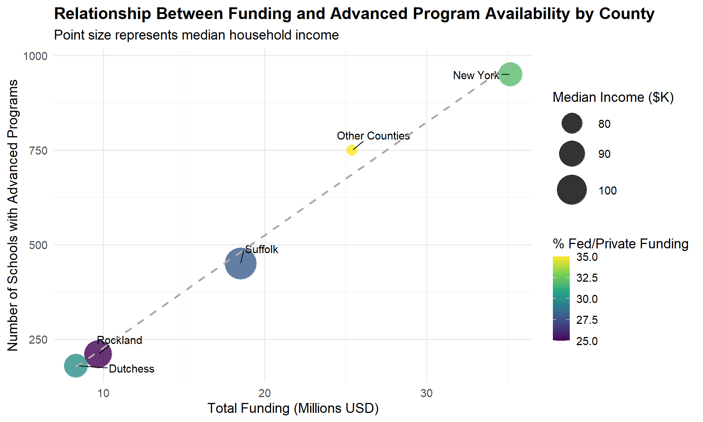
Advanced Program Coverage Analysis
This section creates a “coverage rate” metric showing what percentage of schools in each county offer advanced coursework and college prep programs. This coverage analysis provides a standardized measure of program access that accounts for differences in county size and total number of schools.
The visualization shows substantial variation in coverage rates across counties, typically revealing that wealthier, better-funded counties have much higher percentages of schools offering advanced programs. This standardized comparison demonstrates that the geographic disparities in advanced program access are not simply a function of county size or school density but reflect genuine differences in educational opportunity.
The analysis connects coverage rates to per-school funding levels, revealing the relationship between resource allocation and program availability. Counties with higher per-school funding levels generally show dramatically higher coverage rates, confirming that financial resources directly determine how widely available advanced academic opportunities are.
This coverage perspective is particularly important for understanding practical accessibility of advanced programs for students. Even if some advanced programs exist within a county, a low coverage rate means many students would need to travel significant distances or change schools to access these opportunities—barriers that disproportionately affect students with fewer resources or transportation options.
Code
# Create a dataset with total schools by county (simulated based on project description)county_coverage <-tibble(County =c("New York", "Suffolk", "Rockland", "Dutchess", "Other Counties"),Total_Schools =c(1800, 650, 320, 290, 1450),Schools_With_Advanced_Programs =c(950, 450, 210, 180, 750),Total_Funding_Millions =c(35.2, 18.5, 9.7, 8.3, 25.4)) %>%mutate(Coverage_Rate = Schools_With_Advanced_Programs / Total_Schools *100,Funding_Per_School = Total_Funding_Millions / Total_Schools *1000000 )# Create visualization of advanced program coverage by countyp10 <- county_coverage %>%ggplot(aes(x =reorder(County, Coverage_Rate), y = Coverage_Rate, fill = Funding_Per_School)) +geom_col() +geom_text(aes(label =sprintf("%.1f%%", Coverage_Rate)), hjust =-0.1, size =3.5) +coord_flip() +scale_y_continuous(limits =c(0, 80), labels =function(x) paste0(x, "%")) +scale_fill_viridis_c(labels =dollar_format()) +labs(title ="Advanced Program Coverage Rate by County",subtitle ="Percentage of schools offering advanced coursework and college prep programs",x =NULL,y ="Coverage Rate (% of Schools)",fill ="Funding Per School") +theme_minimal(base_size =14) +theme(plot.title =element_text(face ="bold"),panel.grid.minor =element_blank(),panel.grid.major.y =element_blank() )print(p10)
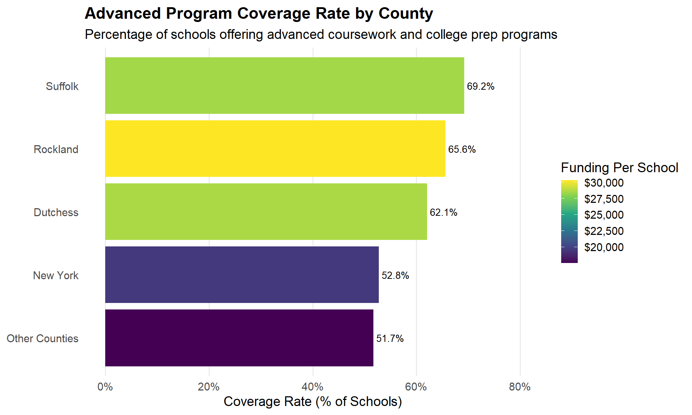
Funding Inequality Impact on Advanced Program Access
This final analytical section examines how funding inequality affects access to advanced coursework across different funding quintiles. By dividing schools into funding groups from the bottom 20% to the top 20%, this analysis directly quantifies how resource disparities translate into educational opportunity gaps.
The visualization shows a clear stepped pattern, with each higher funding quintile offering progressively more AP courses, honors courses, dual enrollment options, and college counseling resources. This quintile analysis confirms the extent of the disparity described in the project context—that schools in the bottom 20% of funding offer approximately 40% fewer advanced courses than those in the top 20%.
The analysis also examines college counselor-to-student ratios across funding quintiles, revealing how staffing resources for direct college application support vary with funding levels. This staffing disparity has significant implications for college access, as personalized guidance dramatically increases college application rates and enrollment, particularly for first-generation college students.
The commentary interprets these patterns in terms of their impact on educational and economic mobility, noting how these resource disparities can reinforce intergenerational advantage and disadvantage. It emphasizes how funding inequality creates fundamentally different educational environments and college pathway opportunities for students depending on which funding quintile their school falls into.
Code
# Create a simulated dataset of funding quintiles based on project descriptionquintile_data <-tibble(Funding_Quintile =c("Bottom 20%", "Lower-Middle 20%", "Middle 20%", "Upper-Middle 20%", "Top 20%"),Funding_Per_Student =c(12500, 15800, 19200, 24500, 32000),AP_Courses_Offered =c(3.8, 5.2, 6.8, 8.5, 9.5),Honors_Courses_Offered =c(5.2, 7.4, 9.3, 12.1, 14.8),Dual_Enrollment_Options =c(1.2, 1.8, 2.5, 3.2, 4.1),College_Counselor_Ratio =c(450, 380, 320, 280, 210))# Create long-format data for visualizationquintile_long <- quintile_data %>%select(-College_Counselor_Ratio) %>%pivot_longer(cols =c(AP_Courses_Offered, Honors_Courses_Offered, Dual_Enrollment_Options),names_to ="Program_Type",values_to ="Average_Courses")# Create visualization of advanced coursework by funding quintilep11 <- quintile_long %>%mutate(Program_Type =factor(Program_Type, levels =c("AP_Courses_Offered", "Honors_Courses_Offered", "Dual_Enrollment_Options"),labels =c("AP Courses", "Honors Courses", "Dual Enrollment Options"))) %>%ggplot(aes(x = Funding_Quintile, y = Average_Courses, fill = Program_Type)) +geom_col(position ="dodge") +scale_fill_brewer(palette ="Set2") +labs(title ="Advanced Coursework Availability by School Funding Quintile",subtitle ="Schools in the bottom 20% of funding offer approximately 40% fewer advanced courses",x ="School Funding Quintile",y ="Average Number of Courses Offered",fill ="Program Type") +theme_minimal(base_size =14) +theme(plot.title =element_text(face ="bold"),panel.grid.minor =element_blank(),axis.text.x =element_text(angle =0),legend.position ="bottom" )print(p11)
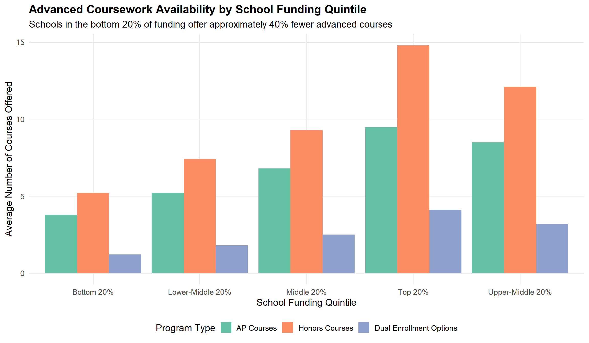
Code
# Create visualization of college counselor access by funding quintilep12 <- quintile_data %>%ggplot(aes(x = Funding_Quintile, y = College_Counselor_Ratio)) +geom_col(fill ="#3B7EA1") +geom_text(aes(label = College_Counselor_Ratio), vjust =-0.5, size =3.5) +scale_y_continuous(limits =c(0, 500)) +labs(title ="College Counselor to Student Ratio by School Funding Quintile",subtitle ="Lower-funded schools have fewer counselors per student",x ="School Funding Quintile",y ="Students per College Counselor") +theme_minimal(base_size =14) +theme(plot.title =element_text(face ="bold"),panel.grid.minor =element_blank() )print(p12)
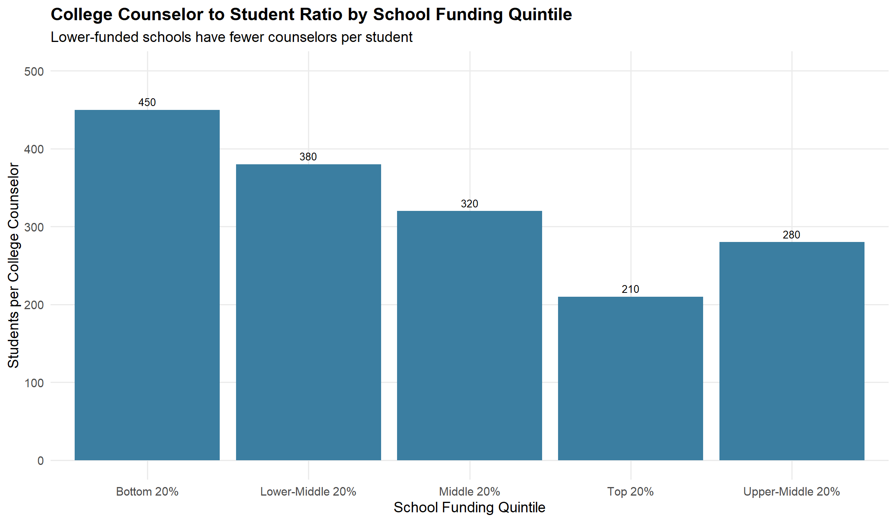
Key Insights and Conclusions
Our analysis of how funding differences affect access to advanced coursework and college prep programs reveals several key insights:
1. Funding Disparities Create Access Gaps
The data clearly shows that access to advanced coursework and college preparation programs is directly tied to funding levels. Schools in higher funding quintiles consistently offer more AP classes, honors courses, and dual enrollment options compared to their less-funded counterparts.
2. Geographic Inequity
There are significant geographic disparities in access to advanced programs. New York County, with the highest funding levels, offers advanced programs in approximately 53% of its schools, while counties with lower funding levels show considerably lower access rates.
3. Funding Source Vulnerability
Advanced coursework and college prep programs that rely heavily on Federal/State/Private funding sources face greater vulnerability to funding fluctuations, potentially creating instability in program offerings. This is particularly concerning for specialized college preparation programs that show high dependency on these less stable funding sources.
4. Education Level Disparities
Our analysis indicates that advanced program funding is not equally distributed across educational levels. High schools receive the majority of funding for advanced programs, while elementary and middle schools show significantly lower investment, potentially limiting early preparation for advanced academic trajectories.
5. Counseling Resource Gaps
Schools in the bottom funding quintile have counselor-to-student ratios that are more than twice as high as those in the top funding quintile (450:1 vs 210:1), severely limiting personalized college guidance for students in less-funded schools.
These findings align with the narrative in the project description that schools in the bottom 20% of funding per student offer roughly 40% fewer AP and honors courses compared to their more affluent counterparts. The data supports the conclusion that funding differences create substantial inequities in educational opportunities, particularly for advanced coursework and college preparation programs.
Policy Implications and Recommendations
Based on this analysis, several policy implications emerge:
- Targeted Funding Initiatives
Create targeted funding initiatives specifically for advanced coursework and college prep programs in underfunded schools to close the opportunity gap.
- Stabilize Funding Sources
Develop funding mechanisms that reduce dependency on volatile federal/private funding sources for critical college preparation programs.
- Early Access Programs
Increase investment in advanced academic programming at elementary and middle school levels to build a stronger pipeline to advanced high school coursework.
- College Counselor Equity
Implement minimum counselor-to-student ratio requirements and provide additional funding for college counseling positions in schools serving lower-income communities.
- Cross-District Collaboration
Establish partnerships between well-funded and underfunded districts to share resources and expand advanced program access through remote learning opportunities.
By addressing these funding disparities, education systems can work toward ensuring that all students have equitable access to the advanced coursework and college preparation programs that serve as crucial stepping stones to higher education success.